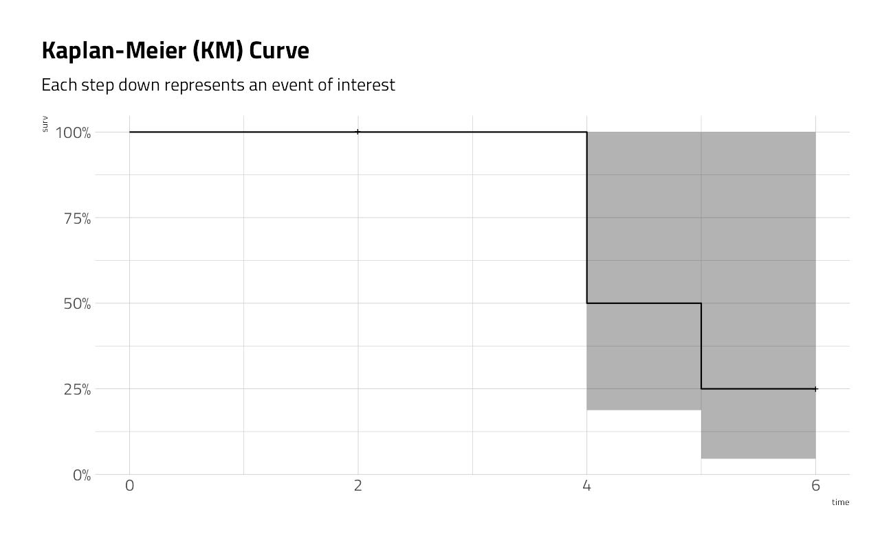
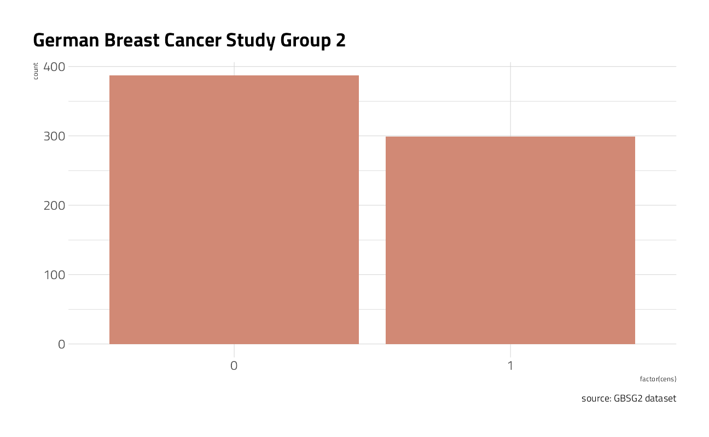
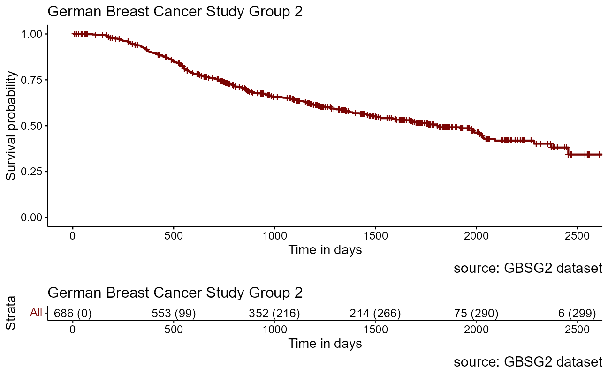
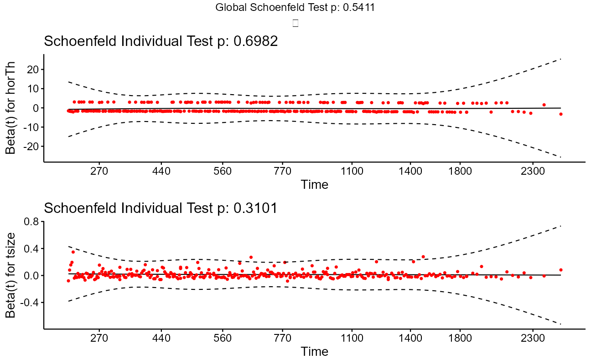
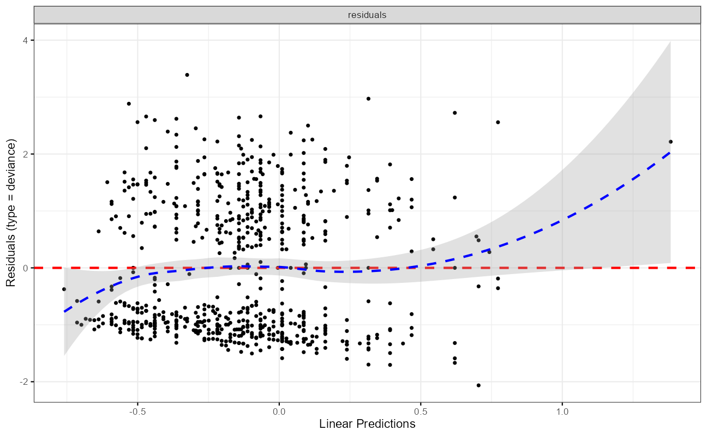
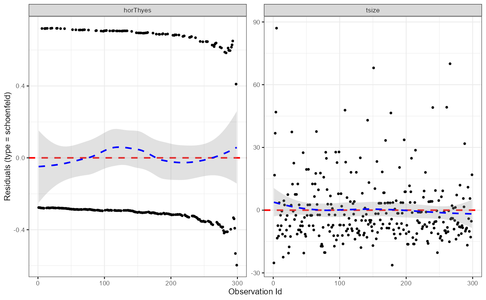

Survival Analysis
Jim Gruman
December 4, 2020
Last updated: 2021-09-08
Checks: 7 0
Knit directory: myTidyTuesday/
This reproducible R Markdown analysis was created with workflowr (version 1.6.2). The Checks tab describes the reproducibility checks that were applied when the results were created. The Past versions tab lists the development history.
Great! Since the R Markdown file has been committed to the Git repository, you know the exact version of the code that produced these results.
Great job! The global environment was empty. Objects defined in the global environment can affect the analysis in your R Markdown file in unknown ways. For reproduciblity it’s best to always run the code in an empty environment.
The command set.seed(20210907) was run prior to running the code in the R Markdown file. Setting a seed ensures that any results that rely on randomness, e.g. subsampling or permutations, are reproducible.
Great job! Recording the operating system, R version, and package versions is critical for reproducibility.
Nice! There were no cached chunks for this analysis, so you can be confident that you successfully produced the results during this run.
Great job! Using relative paths to the files within your workflowr project makes it easier to run your code on other machines.
Great! You are using Git for version control. Tracking code development and connecting the code version to the results is critical for reproducibility.
The results in this page were generated with repository version edd4303. See the Past versions tab to see a history of the changes made to the R Markdown and HTML files.
Note that you need to be careful to ensure that all relevant files for the analysis have been committed to Git prior to generating the results (you can use wflow_publish or wflow_git_commit). workflowr only checks the R Markdown file, but you know if there are other scripts or data files that it depends on. Below is the status of the Git repository when the results were generated:
Ignored files:
Ignored: .Rhistory
Ignored: .Rproj.user/
Ignored: catboost_info/
Ignored: data/2021-09-08/
Note that any generated files, e.g. HTML, png, CSS, etc., are not included in this status report because it is ok for generated content to have uncommitted changes.
These are the previous versions of the repository in which changes were made to the R Markdown (analysis/Survival.Rmd) and HTML (docs/Survival.html) files. If you’ve configured a remote Git repository (see ?wflow_git_remote), click on the hyperlinks in the table below to view the files as they were in that past version.
| File | Version | Author | Date | Message |
|---|---|---|---|---|
| Rmd | edd4303 | opus1993 | 2021-09-08 | knit_global |
| html | d6bb4c2 | opus1993 | 2021-09-08 | Build site. |
| Rmd | b33c0f7 | opus1993 | 2021-09-08 | Add censoring image and Zeltzer playlist |
| html | c72b825 | opus1993 | 2021-09-07 | Build site. |
| Rmd | 9059f93 | opus1993 | 2021-09-07 | wflow_publish(“analysis/Survival.Rmd”) |
Introduction
Survival analysis is one of the oldest subfields of statistics. Basic life-table methods, including techniques for dealing with censored data, were discovered before 1700, and in the early eighteenth century, the old masters - de Moivre working on annuities, and Daniel Bernoulli studying competing risks for the analysis of smallpox inoculation - developed the modern foundations of the field. Today survival analysis models are important in Engineering, Insurance, Marketing, Medicine, Econometrics, and many other application areas.
ZedStatistics episode 1 is a quick no-code, no-math video introduction:
As of this post’s publication, Justin Zeltzer has released 3 episodes to a playlist.
What is Survival Analysis?
A simpler characterization might be time-to-event analysis. These are use cases where we are concerned with the time it takes for an event to occur after an exposure. As an example, an exposure might be the date of a medical diagnosis. Or it could be the moment of childbirth. Or the date of delivery of a new tractor to a customer.

Survival analysis data is aligned for all participants to zero at each participant’s exposure time. The event of interest could be death or the failure of a component of the tractor. Time-to-event data always consist of the distinct exposure start and distinct event end for each study participant.
What is censoring?
A study subject may be censored due to:
- Loss to follow-up (i.e. undocumented, not recorded)
- Withdrawal from study
- No event of interest by the end of the fixed study period
Censored subjects still provide information so must be appropriately included in the analysis. Ignoring censoring leads to an overestimate of the overall survival probability, because the censored subjects only contribute information for part of the follow-up time, and then fall out of the risk set, thus pulling down the cumulative probability of survival.
In industry it is common to track component warranty claims and cost on machines sold. Warranty datasets are heavily censored because the study period rarely aligns with the warranty period for each machine delivered. The study time period and fleet population membership must be carefully considered and explicitly defined. In most cases, exposure is aligned to zero at the warranty start date.
The survival rate is proportion of the study population that has NOT (yet) experienced the event of interest divided by the whole study population membership within the study timeframe.
Why do we need special methods for time to event data?
First, duration times are always positive. Recall that traditional linear regression models make a number of assumptions for independence and normality that are no longer valid in this space. There are distributions, like Weibull, that better represent the problem space. More on this topic later.
The survival package is the cornerstone of the entire R survival analysis edifice. Not only is the package itself rich in features, but the object created by the Surv() function, which contains failure time and censoring information, is the basic survival analysis data structure in R. Dr. Terry Therneau, the package author, began working on the survival package in 1986. The first public release, in late 1989, used the Statlib service hosted by Carnegie Mellon University. Thereafter, the package was incorporated directly into Splus, and subsequently into R.
Let’s look at a quick manual example graphically before moving on. The first thing to do is to use Surv() to build the standard survival object. In this case, the variable time is vector of durations, and the variable event is a binary vector of 1’s for the event of interest and 0’s for lack of event at the end of the study period (censored).
time <- c(5,6,2,4,4)
event <- c(1,0,0,1,1)
Surv(time, event)[1] 5 6+ 2+ 4 4 A simple way of depicting the survival rate of the population Kaplan-Meier estimator, or product limit estimator chart. A plot of the Kaplan–Meier estimator is a series of declining horizontal steps which, with a large enough sample size, approaches the true survival function for that population. The value of the survival function between successive distinct sampled observations (“clicks”) is assumed to be constant. Note that there is no drop denoted at the time points of censoring.
sobj = data.frame(time = time, event = event)
km <- survfit(Surv(time, event) ~ 1, data = sobj) # the survfit object builds the kaplan-meier est
ggsurvplot(fit = km, conf.int = FALSE,
risk.table = "nrisk_cumevents",
legend = "none") +
labs(title = "Kaplan-Meier (KM) Curve",
subtitle = "Each step down represents an event of interest")The ggfortify package also contains methods for autoplotting simple survival plots.
ggfortify:::autoplot.survfit(km) +
labs(title = "Kaplan-Meier (KM) Curve",
subtitle = "Each step down represents an event of interest")
It is important to note here that the KM curve is a non-parametric curve. That is, the curve is simply a description of the underlying data and that there are no parameters involved. Most use cases in this problem space ask that we model to predict the behavior of a population, or the behavior of a change in a treatment of the population. To do so will require that we introduce other concepts, like the hazard parameter. More on this later.
What are good survival analysis questions?
- What is the probability that a breast cancer patient survives longer than 5 years?
- What is the typical waiting time for a cab in Chicago?
- What is the typical time required for patent approval?
- Out of 100 unemployed people, how many do we expect to have a job again after 2 months?
- What is the human resources staff turnover churn rate?
- What is the portion of a T8 tractor population that will experience a water pump failure within the first year?
- How does the insertion of a pacemaker treatment improve the survival probability over time for patients with heart disease?
- What is the typical time to re-admission after a patient is discharged from the hospital?
- What is the typical number of pitches for a relief pitcher in a Major League baseball game?
All of the questions are expressed along the dimensions of the Survival Probability and the duration time to reach that threshold. In many cases, Survival quartiles convey a reasonable sense of the distribution of outcomes.
The survival function can be expressed mathematically as the Probability that the duration is longer than t, or as 1 minus the probability of Failure for a duration longer than t.
\[S(t)=1-F(t)=P(T>t)\]
Let’s pause here and consider what the x-axis duration units can be. It would be easy to see how the duration would be calendar time in years, months, or even days. But survival problems can also be modeled in hours or minutes. And in some cases, series like a sequence of pitches in baseball or engine operating hours are suitable for survival analysis. A pitcher that is not pitching and an engine that is not running will not likely experience events of interest.
Let’s take a closer look at a German Breast Cancer dataset to explore how to answer the question “What is the probability that a breast cancer patient survives longer than 5 years?” The set includes 686 women tracked in a study along with characteristics of each patient. The censoring indicator cens equals 1 for death and 0 for no death within the study timeframe (censored) and the time unit is in days.
data(GBSG2, package = "TH.data") # breast cancer patients, time to death
ggplot(GBSG2, aes(factor(cens))) +
geom_bar(fill = hrbrthemes::ipsum_pal()(1)) +
labs(title = "German Breast Cancer Study Group 2",
caption = "source: GBSG2 dataset")
As noted above, with a large enough sample size, the KM curve approaches the true survival function for that population. We will return to this dataset to explore the impact of the study participants features on survival rates.
sobj <- Surv(GBSG2$time, GBSG2$cens)
km <- survfit(sobj ~ 1, data = sobj) # the survfit object builds the kaplan-meier est
ggsurvplot(fit = km, conf.int = FALSE,
risk.table = "nrisk_cumevents",
legend = "none") + # when there is only one curve of all patients
labs(title = "German Breast Cancer Study Group 2",
caption = "source: GBSG2 dataset",
x = "Time in days")
The Hazard Function
Survival analysis encompasses two complementary quantitative views, the survivor function, denoted by \(S(t)\), and the hazard function, denoted by \(h(t)\). The survivor function \(S(t)\) gives the probability that a person survives longer than some specified time \(t\): that is, \(S(t)\) gives the probability that the random variable \(T\) exceeds the specified time \(t\). The survivor function is fundamental to a survival analysis, because obtaining survival probabilities for different values of \(t\) provides crucial summary information from survival data.
The hazard function, denoted by \(h(t)\), is given by the formula: \(h(t)\) equals the limit, as \(\Delta{t}\) approaches zero, of a probability statement about survival, divided by \(\Delta{t}\), where \(\Delta{t}\) denotes a small interval of time.
\[ h(t)=\lim_{\Delta{t}\to{0}}\frac{P(t\le T < t + \Delta{t} | T \ge t)}{\Delta{t}} \]
Before getting into the specifics of the formula, let’s consider a conceptual interpretation. The hazard function \(h(t)\) gives the instantaneous potential per unit time for the event to occur, given that the individual has survived up to time \(t\). Note that, in contrast to the survivor function, which focuses on not failing, the hazard function focuses on failing, that is, on the event occurring. Thus, in some sense, the hazard function can be considered as giving the opposite side of the information given by the survivor function.
To get an idea of what we mean by instantaneous potential, consider the concept of velocity. If, for example, you are driving in your car and you see that your speedometer is registering 60 mph, what does this reading mean? It means that if in the next hour, you continue to drive this way, with the speedometer exactly on 60, you would cover 60 miles. This reading gives the potential, at the moment you have looked at your speedometer, for how many miles you will travel in the next hour. However, because you may slow down or speed up or even stop during the next hour, the 60-mph speedometer reading does not tell you the number of miles you really will cover in the next hour. The speedometer tells you only how fast you are going at a given moment; that is, the instrument gives your instantaneous potential or velocity.
Similar to the idea of velocity, a hazard function \(h(t)\) gives the instantaneous potential at time \(t\) for getting an event, like death or some disease of interest, given survival up to time \(t\). The “given” part, that is, surviving up to time \(t\), is analogous to recognizing in the velocity example that the speedometer reading at a point in time inherently assumes that you have already traveled some distance (i.e., survived) up to the time of the reading.
In mathematical terms, the given part of the formula for the hazard function is found in the probability statement in the numerator to the right of the limit sign. This statement is a conditional probability because it is of the form, “P of A, given B,” where the P denotes probability and where the long vertical line separating A from B denotes “given.” In the hazard formula, the conditional probability gives the probability that a person’s survival time, \(T\), will lie in the time interval between \(t\) and \(t + \Delta{t}\), given that the survival time is greater than or equal to \(t\). Because of the given sign here, the hazard function is sometimes called a conditional failure rate.
Be careful to note that the hazard is a rate rather than a probability. Note that in the hazard function formula, the expression to the right of the limit sign gives the ratio of two quantities. The numerator is the conditional probability we just discussed. The denominator is \(\Delta{t}\), which denotes a small time interval. By this division, we obtain a probability per unit time, which is no longer a probability but a rate. In particular, the scale for this ratio is not 0 to 1, as for a probability, but rather ranges between 0 and infinity, and depends on whether time is measured in days, weeks, months, or years, etc.
When we take the limit of the right-side expression as the time interval approaches zero, we are essentially getting an expression for the instantaneous probability of failing at time \(t\) per unit time. Another way of saying this is that the conditional failure rate or hazard function \(h(t)\) gives the instantaneous potential for failing at time \(t\) per unit time, given survival up to time \(t\).
As with a survivor function, the hazard function \(h(t)\) can be graphed as \(t\) ranges over various values. In contrast to a survivor function, the graph of \(h(t)\) does not have to start at 1 and go down to zero, but rather can start anywhere and go up and down in any direction over time. In particular, for a specified value of \(t\), the hazard function \(h(t)\) has the following characteristics:
- it is always non-negative, that is, equal to or greater than zero, and
- it has no upper bound.
Of the two functions we have considered, \(S(t)\) and \(h(t)\), the survivor function is more naturally appealing for analysis of survival data, simply because \(S(t)\) directly describes the survival experience of a study cohort. However, the hazard function is also of interest for the following reasons:
- it is a measure of instantaneous potential whereas a survival curve is a cumulative measure over time
- it may be used to identify a specific model form, such as an exponential, a Weibull, or a lognormal curve that fits one’s data
- it is the vehicle by which mathematical modeling of survival data is carried out; that is, the survival model is usually written in terms of the hazard function.
Regardless of which function \(S(t)\) or \(h(t)\) one prefers, there is a clearly defined relationship between the two. In fact, if one knows the form of \(S(t)\), one can derive the corresponding \(h(t)\), and vice versa.
In any actual data analysis, R / Stata / SAS / Matlab can make the numerical transformation from \(S(t)\) to \(h(t)\), or vice versa, without the user ever having to use either formula. The point here is simply that if you know either \(S(t)\) or \(h(t)\), you can get the other directly.
The Weibull model
To create a parametric survival model in R, the survival object from above is simply fed into the survreg() function of the {survival} package. As a first pass demonstration here, we will use formula notation to model on none of the data features with ~ 1. Model probabilities between 0.01 and 0.99 are fed into the model to predict the time at each, and the associated plot is shown here:
# Weibull model
wb <- survival::survreg(Surv(time, cens) ~ 1, GBSG2)
# Retrieve survival curve from model probabilities
surv <- seq(.99, .01, by = -.01)
# Get time for each probability
t <- predict(wb, type = "quantile", p = 1 - surv, newdata = data.frame(1))
# Create data frame with the information
surv_wb <- data.frame(time = t, surv = surv,
upper = NA, lower = NA, std.err = NA)
ggsurvplot_df(fit = surv_wb, surv.geom = geom_line, legend = "none") +
labs(title = "German Breast Cancer Study Group 2",
subtitle = "Weibull model",
caption = "source: GBSG2 dataset",
x = "Time in days")The base Weibull model curve is a smoothed parametric form of the stepped Kaplan-Meier curve that we saw earlier. The power of the parametric approach becomes apparent when we model on the differences in features within the dataset for inference. Recall in the German Breast Cancer dataset that it includes patient attributes including classifications for the size of the tumor tsize and whether hormonal therapy was applied as horTh.
GBSG2 %>%
head() %>%
knitr::kable()| horTh | age | menostat | tsize | tgrade | pnodes | progrec | estrec | time | cens |
|---|---|---|---|---|---|---|---|---|---|
| no | 70 | Post | 21 | II | 3 | 48 | 66 | 1814 | 1 |
| yes | 56 | Post | 12 | II | 7 | 61 | 77 | 2018 | 1 |
| yes | 58 | Post | 35 | II | 9 | 52 | 271 | 712 | 1 |
| yes | 59 | Post | 17 | II | 4 | 60 | 29 | 1807 | 1 |
| no | 73 | Post | 35 | II | 1 | 26 | 65 | 772 | 1 |
| no | 32 | Pre | 57 | III | 24 | 0 | 13 | 448 | 1 |
Because the tumor size tsize is numeric, we will project the 25th, 50th, and 75th quantile to understand the effect. Survival for each combination of features, or covariates, are modeled as survreg(Surv(time, cens) ~ horTh + tsize, data = GBSG2). Generally speaking, the steps to crafting the visualization are
- Compute the Weibull model
- Decide on the array of “imaginary patients” (quantiles in this case)
- Predict durations for each survival rate to build curves
- Bind a data.frame with all survival curve information for each covariate
- Plot
wbmod <- survreg(Surv(time, cens) ~ horTh + tsize, data = GBSG2)
newdat <- expand.grid(
horTh = levels(GBSG2$horTh),
tsize = quantile(GBSG2$tsize, probs = c(0.25, 0.5, 0.75))
)
surv <- seq(0.99, 0.01, by = -0.01)
t <- predict(wbmod, type = "quantile", p = 1 - surv, newdata = newdat)
surv_wbmod_wide <- cbind(newdat, t)
# transpose the data frame
surv_wbmod <- reshape2::melt(surv_wbmod_wide,
id.vars = c("horTh", "tsize"),
variable.name = "surv_id", value.name = "time"
)
surv_wbmod$surv <- surv[as.numeric(surv_wbmod$surv_id)]
# add variables required by the plotting function
surv_wbmod[, c("upper", "lower", "std.err", "strata")] <- NA
ggsurvplot_df(surv_wbmod,
surv.geom = geom_line,
linetype = "horTh", color = "tsize", legend.title = NULL
) +
labs(title = "German Breast Cancer Study Group 2",
subtitle = "Weibull models",
caption = "source: GBSG2 dataset",
x = "Time in days")
Other distributions beyond Weibull
In addition to Weibull, the surveg() function will model exponential, lognormal, gaussian, logistic, and loglogistic as parametric distributions on the data provided. These may be more suitable for small samples where prior information is known about the survival characteristics of the larger population.
The Cox regression model, also known as the proportional hazards model
In many applications of survival analysis, the interest focuses on how covariates may affect the outcome; in clinical trials, adjustment of treatment effects for effects of other explanatory variables may be crucial if the randomized groups are unbalanced with respect to important prognostic factors, and in epidemiological cohort studies, reliable effects of exposure may be obtained only if some adjustment is made for confounding variables. In these situations, a regression model is useful and the most important model for survival data is the Cox proportional hazards regression model.
cxmod <- coxph(Surv(time, cens) ~ horTh + tsize, data = GBSG2)
broom::tidy(cxmod, exp = TRUE) %>%
knitr::kable()| term | estimate | std.error | statistic | p.value |
|---|---|---|---|---|
| horThyes | 0.6882602 | 0.1251764 | -2.984494 | 0.0028405 |
| tsize | 1.0153688 | 0.0035637 | 4.279772 | 0.0000187 |
Note that the model flags both horTh and tsize features as significant. However, some caution needs to be exercised in interpreting these results. While the Cox Proportional Hazard’s model is thought to be “robust”, a careful analysis would check the assumptions underlying the model. For example, the Cox model assumes that the covariates do not vary with time. In a vignette that accompanies the survival package Therneau, Crowson and Atkinson demonstrate that the Karnofsky score (karno) is, in fact, time-dependent so the assumptions for the Cox model are not met. The vignette authors go on to present a strategy for dealing with time dependent covariates.
And a data visual:
newdat <- expand.grid(
horTh = levels(GBSG2$horTh),
tsize = quantile(GBSG2$tsize, probs = c(0.25, 0.5, 0.75))
)
rownames(newdat) <- letters[1:6]
cxsf <- survfit(cxmod, data = GBSG2, newdata = newdat, conf.type = "none")
surv_cxmod0 <- surv_summary(cxsf)
surv_cxmod <- cbind(surv_cxmod0, newdat[surv_cxmod0$strata, ])
ggsurvplot_df(surv_cxmod,
fun = "cumhaz",
surv.geom = geom_line,
linetype = "horTh",
color = "tsize",
legend.title = NULL,
censor = FALSE
) +
labs(title = "German Breast Cancer Study Group 2",
subtitle = "Cox Proportional Hazard models",
caption = "source: GBSG2 dataset",
x = "Time in days")Data scientists who are accustomed to computing ROC curves to assess model performance should be interested in the Concordance statistic. The documentation for the survConcordance() function in the survival package defines concordance as “the probability of agreement for any two randomly chosen observations, where in this case agreement means that the observation with the shorter survival time of the two also has the larger risk score. The predictor (or risk score) will often be the result of a Cox model or other regression” and notes that: “For continuous covariates concordance is equivalent to Kendall’s tau, and for logistic regression is is equivalent to the area under the ROC curve.”
fit.test <- cox.zph(cxmod)
ggcoxzph(fit.test)
ggcoxdiagnostics(cxmod,
type = "deviance",
ax.scale = "linear.predictions")
ggcoxdiagnostics(cxmod,
type = "schoenfeld",
ax.scale = "time")
ggforest(cxmod, data = GBSG2)The quantity of interest from a Cox regression model is a hazard ratio (HR). The HR represents the ratio of hazards between two groups at any particular point in time. The HR is interpreted as the instantaneous rate of occurrence of the event of interest in those who are still at risk for the event. It is not a risk, though it is commonly interpreted as such.
If you have a regression parameter \(\beta\) (from column estimate in our coxph) then HR = \(e^\beta\). Thus, a HR < 1 indicates reduced hazard of death whereas a HR > 1 indicates an increased hazard of death.
Additional resources
The survival package also includes robust methods for adjusting survival models for confounding variables, multi-state models (i.e. healthy-illness-death), population contrasts, competing risks, and validation. Much more material can be found in the Vignettes.
sessionInfo()R version 4.1.1 (2021-08-10)
Platform: x86_64-w64-mingw32/x64 (64-bit)
Running under: Windows 10 x64 (build 19043)
Matrix products: default
locale:
[1] LC_COLLATE=English_United States.1252
[2] LC_CTYPE=English_United States.1252
[3] LC_MONETARY=English_United States.1252
[4] LC_NUMERIC=C
[5] LC_TIME=English_United States.1252
attached base packages:
[1] splines stats graphics grDevices utils datasets methods
[8] base
other attached packages:
[1] survminer_0.4.9 ggpubr_0.4.0 survival_3.2-11 broom_0.7.9
[5] forcats_0.5.1 stringr_1.4.0 dplyr_1.0.7 purrr_0.3.4
[9] readr_2.0.1 tidyr_1.1.3 tibble_3.1.4 ggplot2_3.3.5
[13] tidyverse_1.3.1 workflowr_1.6.2
loaded via a namespace (and not attached):
[1] readxl_1.3.1 backports_1.2.1 systemfonts_1.0.2
[4] workflows_0.2.3 plyr_1.8.6 listenv_0.8.0
[7] digest_0.6.27 foreach_1.5.1 htmltools_0.5.2
[10] yardstick_0.0.8 viridis_0.6.1 parsnip_0.1.7.900
[13] fansi_0.5.0 ggfortify_0.4.12 magrittr_2.0.1
[16] tune_0.1.6 tzdb_0.1.2 openxlsx_4.2.4
[19] recipes_0.1.16 globals_0.14.0 modelr_0.1.8
[22] gower_0.2.2 extrafont_0.17 extrafontdb_1.0
[25] hardhat_0.1.6 rsample_0.1.0 dials_0.0.9.9000
[28] colorspace_2.0-2 rvest_1.0.1 textshaping_0.3.5
[31] haven_2.4.3 xfun_0.25 crayon_1.4.1
[34] jsonlite_1.7.2 zoo_1.8-9 iterators_1.0.13
[37] glue_1.4.2 gtable_0.3.0 ipred_0.9-11
[40] car_3.0-11 Rttf2pt1_1.3.9 future.apply_1.8.1
[43] abind_1.4-5 scales_1.1.1 infer_1.0.0
[46] DBI_1.1.1 rstatix_0.7.0 Rcpp_1.0.7
[49] gridtext_0.1.4 viridisLite_0.4.0 xtable_1.8-4
[52] GPfit_1.0-8 foreign_0.8-81 km.ci_0.5-2
[55] lava_1.6.10 prodlim_2019.11.13 httr_1.4.2
[58] ellipsis_0.3.2 farver_2.1.0 pkgconfig_2.0.3
[61] nnet_7.3-16 sass_0.4.0 dbplyr_2.1.1
[64] utf8_1.2.2 reshape2_1.4.4 labeling_0.4.2
[67] tidyselect_1.1.1 rlang_0.4.11 DiceDesign_1.9
[70] later_1.3.0 cachem_1.0.6 munsell_0.5.0
[73] cellranger_1.1.0 tools_4.1.1 cli_3.0.1
[76] generics_0.1.0 evaluate_0.14 fastmap_1.1.0
[79] ragg_1.1.3 yaml_2.2.1 knitr_1.33
[82] fs_1.5.0 zip_2.2.0 survMisc_0.5.5
[85] nlme_3.1-152 future_1.22.1 whisker_0.4
[88] xml2_1.3.2 compiler_4.1.1 rstudioapi_0.13
[91] curl_4.3.2 ggsignif_0.6.2 reprex_2.0.1
[94] lhs_1.1.1 bslib_0.3.0 stringi_1.7.4
[97] highr_0.9 gdtools_0.2.3 hrbrthemes_0.8.0
[100] lattice_0.20-44 Matrix_1.3-4 markdown_1.1
[103] styler_1.5.1 KMsurv_0.1-5 conflicted_1.0.4
[106] vctrs_0.3.8 tidymodels_0.1.3 pillar_1.6.2
[109] lifecycle_1.0.0 furrr_0.2.3 jquerylib_0.1.4
[112] cowplot_1.1.1 data.table_1.14.0 httpuv_1.6.2
[115] R6_2.5.1 promises_1.2.0.1 gridExtra_2.3
[118] rio_0.5.27 parallelly_1.27.0 codetools_0.2-18
[121] MASS_7.3-54 assertthat_0.2.1 rprojroot_2.0.2
[124] withr_2.4.2 mgcv_1.8-36 ggtext_0.1.1
[127] parallel_4.1.1 hms_1.1.0 grid_4.1.1
[130] rpart_4.1-15 timeDate_3043.102 class_7.3-19
[133] rmarkdown_2.10 carData_3.0-4 git2r_0.28.0
[136] pROC_1.18.0 lubridate_1.7.10